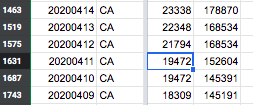
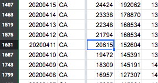

California Positive Test Data For 4/11 is identical to 4/10
Issue number 387
sluggo1133 opened this issue on May 7, 2020 at 9:14 pm
In examining the latest data for CA “Positive” (a cume of diagnosed infections) the numbers for 4/11/20 are now identical to the numbers for 4/10/20 (19,472) as are the date time stamps (4/9/20 0:00). This would mean that California (population 39.9M) saw no new COVID-19 cases between April 10 and April 11. This occurred during a time when the average daily new case count (7 days either side of 4/11/20) was 1,304/day. I had been pulling data daily and on 4/12/20 when I originally pulled this data the “Positive” number for 4/11/20 was 20,615 which made sense at the time. There has obviously be a restatement of back data in the source, but I would argue there is a error in that restated data. Don’t know who to call about this.
Thanks @sluggo1133 . The CA press release with the most up-to-date Positive number came out after our publish time on 4/11. We have updated the Positive and you should see it reflected on our site shortly. Before:  After:  State website screenshot: https://covidtracking.com/screenshots/CA/CA-20200412-000303.png